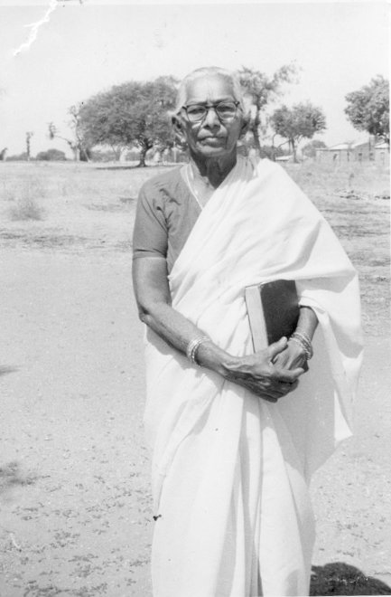

Subbamma was one of the lowest of the low.
Her very shadow was considered “unclean” by high-caste Hindus.
Married as a “child bride,” she proved barren, and was judged “cursed” by her husband’s family.
After 35 years of ill treatment, she determined to kill herself and to end it all.
As she neared the river to throw herself in,
she met a British missionary, Mr. Charles
Whitehouse. This divine encounter resulted in
her inviting Jesus to be her Lord and Savior. God
piled grace upon grace as she rejoined her
husband, quickly became pregnant, and was
reconciled with his family.
Subbamma journeyed from despair to hope.
This new Christian tackled the injustice around
her as she became a follower of Christ. Denied
the right to earn a living, she taught herself and
the women of the village to make lace and
export it to support themselves. She gathered
the unwanted illegitimate children whose
untouchable mothers were forced to bear them.
And having taught herself to read and write,
she gathered these children and taught and fed
them in a one-room dirt-floored hut. Because
the untouchables were denied medical care, she
trained herself to be a midwife and taught other
women about safe childbearing.
Through her living faith, her village began to be
transformed by Christ. When she died, prior to
her 99th birthday, her grandson, Dr. S. Darwin,
brought her body from the U.S. to Mori, India for
burial. Her grandson participated in an 8 hour
long funeral service where for the first time, he
heard testimonies from people, who were
birthed, named, educated, trained, employed
and adopted by her.
Dr. Darwin and his wife Amy Darwin co-founded
Project India Compassion Trust, to make the Lord’s
name known throughout India by serving those in need.
Today, we continue Subbamma’s legacy of service by supporting
education, medical care, spiritual development, and leadership
training in the Mori Village.